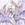

|

Cloud-Dreamer
Author of 15 Stories |
A Ranma crossover fanfic
Started - 1 February 2003 Completed – 12 June 2003
Last revised - 10 May 2004 Reason - typos
Characters are from Ranma ½, Sailor Moon and Ah, My Goddess. They are used without permission or profit. This is a form of literary tribute to the original authors and no copyright infringement is intended.
Chaotic Future . . . by . . . Cloud Dreamer
Chapter two - Homecoming
Skuld slowly sank to his knees as he once again failed in his latest effort to fix the small glitch in Banpei. It seems that his creation refused to acknowledge the reprogramming that he was trying to initialize; something about unauthorized user. 'Sigh', it seemed that the gender change caused Banpei to decide that 'he' wasn't the same Skuld that had created it.
Belldandy came up behind him to console the young god. "I'm sure that something will work out for you Skuld. You know Father never makes impossible demands. You just have to do your part." The middle sister paused and then asked, "Little brother, did you decide what to do about the lock on Ranma's curse?"
Skuld nodded, "Yes, for now let it remain so that that jerk can see what it's like to be frozen in the wrong body. She, he deserves it!"
Urd quietly came in at this point and said. "Humm huh, and that's why dad's punishing you; because 'he' deserves it and you don't."
Skuld blushed and slowly responded, "Ok, so I went overboard. Still she was the one who started the whole thing. I think 'he' deserves to know what being in the wrong body is like." Seeing Urd cock an eyebrow, Skuld blushed and added, "Alright, so he probably already does know since he was working as a girl when we met; but being frozen in that form is likely to teach him a lesson about mouthing off to strangers."
Urd shook her head 'no' as she slowly answered, "Ranma's been frozen in that form several times, so all you are teaching her is that you are petty and cruel just like she said."
Belldandy looked quizzically at her elder sister, "Urd, how do you know this? I tried to look at Ranma's file this morning and I found that everything about him or her is locked out for 'Kami-sama's eyes' only."
Urd pulled a thick folder out of her robes, "I know because he was a hobby of mine for a brief while almost a year ago, until it got to be more than I could take just after he killed Saffron about six months ago." She sighed and opened the folder; "I was so interested that I printed out a copy of his life, including his expected future." The two younger sisters were surprised to note the pair of tears that made their way down the elder goddess's face. "I've never seen a child subjected to so much pain in the name of training. His heart is honorable and he's clueless too. Yet somehow he seems to be engaged to four girls. He was doomed to end up with the only one who actually didn't really love him as anything more than a possession. She would eventually kill him in a fit of jealously." She choked back a small sniffle, "I actually tried to help him with a small potion here and a little love spell there, but nothing I did seemed to make a difference." She sighed and then said, "Despite everything I did, he was on the fast track for a useless death in just a few years." She looked at her 'brother' and softly said, "It's odd in a way, yesterday you nearly killed her. But in locking him into female form, you may have ended up saving Ranma's life."
Urd tossed the file on Skuld's desk and walked away, "Be kind little brother, Dad doesn't make mistakes and He's paired you up with Ranma for a reason."
Belldandy opened up the file and smiled at the photo of a smiling four year old hugging a cat. "Ahhh, isn't that cute."
Skuld shrugged noncommittally; that was the last time he did so that day as the two of them began looking over the file. Both of them were too shocked to react as they spent the next several hours reading the file at 'godly' speed. When they finished, Belldandy sank to the floor sobbing while Skuld barely made it to the bathroom in time to hurl.
Pluto sighed as she watched the flickering future life of one Ranma Saotome. Well, she tried to anyway. But the girl's life was in constant flux and was the source for all the chaos that Pluto saw whenever she tried to view the time stream. Pluto could only surmise that it was because the redhead was actively involved with three kami. Nothing else explained the chaos emanating from the girl for no apparent reason. Pluto couldn't see the actions of the kami directly though she could see the numerous possible affects on Ranma, sort of.
She could see the three particular kami that were caught up in this mess though and was not happy about which ones were involved. The three Norns were the kami that were the most important to Crystal Tokyo at this time and those were the ones most affected by this whole calamity. Pluto had already decided that the redhead alone qualified for the term 'disaster'.
Pluto tried to see the redhead's past only to find that it was blocked for some reason. Her control over the time gate had always been less than perfect in recent millennia since not all the Norns were 'first-class' goddesses at this time, yet now it seemed to be really out of whack as she kept getting views of this guy with a black pigtail instead. What his connection to the girl was happened to elude the Senshi of Time at the moment.
Urd had been watching Ranma by using her domain, after all she was the goddess of the past and the past started nanoseconds after 'the present' so it was virtually real time as far as she was concerned.
She was about to embark on her own plan to 'help' him when she paused as a rare second thought occurred to her. She sighed and made her way to Asgard via the TV in her room. Once there, she initiated an entry into the 'Master Operations Log' and wrote her proposed action into the system. It was only a matter of moments later that it came back 'approved for implementation'. Urd was stunned. She'd done this a few hundred other times in her past and most had been disapproved, a few approved with changes and even two given preliminary approval after days of haggling. She'd actually gotten to the point of not bothering to get approval anymore since she so rarely got it when she asked. This was new. She smiled; with an approved plan, she could call up additional resources.
She was about to enter requirements into the Log when there was a knock on the door. When she answered it, there was an angel who simply handed her a large box and left. Urd took the box into her quarters and opened it. She looked over the papers that accompanied the training materials before noticing the note. It was from Kami-sama and all it said was:
"If you keep on behaving like this, I may have no choice but to promote you, love, Dad."
Urd blushed to her toes and changed her mind about skipping the briefing materials.
Several hours later she appeared out of a TV in an unoccupied student's lounge at a university dorm. She made her way to the dorm office and presented her card to the receptionist. "Urd Odinsdatter to see Nabiki Tendou, official business."
The dorm student receptionist glanced at the card, glanced again and swallowed before nodding and sending another student to fetch Nabiki out of her room.
Nabiki scowled as she followed her fellow student back to the dorm office area. Unknown things unsettled her. Before her she saw a tall gaijin woman with platinum hair and dressed in a light grey neatly tailored business suit. As she came abreast of the stranger, she was asked, "Nabiki Tendou?"
Nabiki cautiously replied, "Who wants to know?"
"Close enough," grinned the woman as she shoved a bulky envelope into Nabiki's hands, "You are served." She grinned at the startled girl and said, "I'm Ranma's attorney Urd Odinsdatter. The court documents are pretty self-explanatory but I would recommend that you hire an attorney anyway. Trust me, you are going to need one because this is about to get very expensive for you."
Nabiki blanched and started to sputter, but the woman ignored her and walked quickly out of sight. The other people in the dorm office area carefully ignored all of this but Nabiki could already imagine the rumors that were sure to fly. And there wasn't much she could do about it either.
Ranma trudged slowly along the sidewalk forgoing her usual path on the fences in deference to the melancholy that seemed to pervade her life for the moment. She paused when she heard the faint 'tap-tap' of a familiar irritant approaching.
"Hello Ranma," softly greeted Cologne.
Ranma paused at the unusual greeting and was interrupted before she could ask anything.
"It is my sad duty to inform you that you are no longer Xian Pu's husband to be anymore." She grinned slightly at the shocked look on Ranma's face and continued. "I realize you are probably more inclined to jump for joy instead of anything else, but I do owe you an explanation at least. Ranma, when you became the plaything of the kami yesterday, you became a danger to the Amazon village. When you were locked into female form as well, then it was necessary to sever all connections between you and the Amazons lest the attention of the kami be directed toward us. Therefore you are free of the kiss of marriage, the kiss of death and any other obligation between us." Cologne noticed the sadness creeping over the redhead's face and continued, "Ranma, just between the two of us. I'm glad I had the chance to meet you and though I wish you could have become a part of our village, I'm also glad that you did not because I don't think you would have been truly happy there. I like you too much to want that for you."
"You 'like' me? Really?" asked the stunned girl. Cologne nodded and was surprised to be enveloped by a hug. A very brief hug as the girl almost immediately regained her equilibrium and grinned as she stepped back before adding, "Well, I have to admit that I kind of like you too 'old ghoul'; despite all the stuff you did to me, you were one of the best teachers I ever had."
The two grinned at each other before bowing slightly to each other and simply parting without another word. All had been said that was needed.
Ranma had gone barely another block before Shampoo silently stepped in front of her. Ranma took in the traces of tears on the girl's face before she sighed, put her pack down and stepped into a mutual embrace with the girl. She held Shampoo as she sobbed and when she heard Shampoo ask 'why', Ranma answered equally softly. "It just wasn't meant to be. You look great, you're a talented fighter and cook and lots of other stuff too. But we got off on the wrong foot. I just never quite got over the 'kiss of death' thing." Ranma paused and then swallowed before adding, "And there was the matter of trust. With all the potions and stuff you used on me, I never did quite trust you and it seemed to me that you never did really trust me either. Maybe it was because you were trained to see males as property and inferior in general. But I never did see that you respected me as anything more than a fighter."
Shampoo pulled back and brokenly asked, "Ranma please come back to village with Shampoo?"
Ranma sighed and waved a hand toward herself, "As what Shampoo? I'm locked like this so I can't be your husband. And if the curse was unlocked, then all I'd become is another 'mere' male in your village. I'm sorry Shampoo, but I'll never accept being a 'mere' anything."
Shampoo's shoulders sagged in acceptance. She smiled a bit sadly then slowly stepped forward and carefully leaned forward and kissed the shorter girl on the forehead before saying, "Shampoo name Ranma, Shampoo's shield-sister and Amazon friend." She then handed Ranma a golden bracelet, saying, "is bonding gift" before bounding away.
Ranma stood there stunned for a few moments before sighing and looking at the bracelet. It appeared to be of great antiquity and was beautiful in its simplicity. Ranma put it in her backpack and resumed her walk to Juuban, but with a bit more of a happy bounce than before.
Shampoo watched Ranma from a high rooftop several blocks away. She 'eeped' when her grandmother's voice spoke quietly from beside her. "That was well done, Xian Pu, warrior maiden of the Amazons. You have kept a powerful ally for the tribe and bound her in friendship when all else was lost though I am curious as to why you gave her that particular 'bonding gift'. It is said that it was once a magical item though no trace of magic remains in it anymore other than its indestructibility."
In her native tongue she replied, "I love Ranma, no matter the gender. I love Ranma enough to even consider becoming a male myself should the springs ever recover from the damage Ranma caused. But even then, it would not be enough, as Ranma does not love me. As for the gift, well as great-grandma said, the bracelet is indestructible, just like Ranma is. No matter what seems to happen to Ranma, somehow he wins in the end; usually not in an expected way but a win nonetheless. The gift seemed fitting somehow." Shampoo whispered these words in Mandarin so that no one could overhear her reply to her great-grandmother.
"Yes, I wish it was otherwise. But Ranma's heart is both broken and lost. Not even she knows where the pieces are anymore." Cologne's creased face showed a bit of sadness as she said this. Without another glance at Ranma, they turned together and started to return to the café to begin preparations to return home.
As they made their way home, Cologne casually remarked. "I'm surprised you named Ranma 'shield-sister'. You know that you now have an obligation to train her and guard her back."
"Aiaeee, Shampoo forget that! That mean Shampoo no can go home with you and Mousse now but must stay and watch over new sister."
Cologne chuckled, "Yeah child, you 'forgot' that. Tell me another." She grinned at the sheepish looking warrior and said, "Well, you'll have to go back to the village first and conclude this part of our expedition. IF the council approves, then you can return and fulfill your duty to your new sister. In the meantime, it's about time I increased your training so that you can do your duty better should it come to that."
Shampoo nodded in happy anticipation.
Skuld and Belldandy looked over the pages of the file slowly and almost randomly. It wasn't as if they needed to look at anything as both could recall almost every detail very clearly, unfortunately. But the motions somehow seemed to push the information away a little bit. Finally Belldandy asked, "Skuld, what are we going to do about Ranma's curse. It really does seem petty and cruel to leave it locked now."
Skuld rubbed his temples and slowly made a rare measured reply. "Yes, I have to agree with you big sister. But it would be even more 'petty and cruel' to unlock it at this time knowing the probable future consequences to 'him' like we do now." Skuld shuddered, "Nobody deserves a marriage and death like that, NOBODY."
Belldandy nodded, "Alright Skuld, the decision is yours." She looked at her brother and added, "Both Urd and I have talked about this and we've decided that Dad has placed Ranma under your care. Neither of us will interfere."
"But what do I tell Ranma?" Skuld asked. Seeing the questioning look on his sister's face, the young god continued. "At one point, I told Ranma that I'd let you undo the lock on her curse. I also gave her this address, so she'll show up here pretty soon to see you. But with what we know, I can't do that now. But if I tell Ranma the truth, she'll freak. But since we are deities, we can't lie either."
Belldandy sighed, "If you said you'd allow the curse to be unlocked, then I guess that counts as a promise."
Skuld shook his head, "No, not quite. I also said afterwards that I wouldn't. Neither time did I actually 'promise' anything. Either way, I didn't give any time frame, so that option is still open." Seeing the sharp look his sister was giving him, Skuld defended, "Yes, I know it's being picky. It's 'bending' the promised intent to release the lock but not breaking it."
Belldandy primly replied, "Bending is still not keeping the promise."
Skuld cut her off, "I know, and I would agree if I was doing this to be mean or to avoid keeping the promise. I do want to keep this promise; Ranma deserves it. But I can't be the cause of letting him die like he was supposed to, nobody deserves that."
"Skuld, you wouldn't be the cause . . ."
"YES I WOULD!" Skuld interrupted Belldandy again, this time with an emotional shout. "I can prevent it. No matter who actually kills Ranma, if I can prevent it and don't, then I AM the cause of her death." Skuld sat down, and whispered, "Please big sister, don't do this. Not until the danger to Ranma has passed. Not for my sake but Ranma's sake."
"Alright," Belldandy simply said. She watched her younger sibling for a few long moments before asking, "So, what are you going to tell Ranma?"
Haruka and Michiru studied the image in the Deep Aqua mirror and then looked up, comparing the images in it to the redheaded girl passing them on the other side of the street at the moment. The same thought was in their minds, 'maybe Pluto wouldn't do anything about the situation, but they would.'
They turned into an alley and both transformed amid a kaleidoscope of flashing colors. Sailors Uranus and Neptune were on the prowl, not for justice but for revenge for their lost future.
Ranma's danger sense kicked in barely in time for her to dodge the two attacks by jumping straight up. She tossed her backpack into the roof of the bar she had been passing as she continued to bound between buildings on both sides of the street while she searched for her attackers. The bar itself was fortunately empty at this time in the morning. Fortunately indeed considering that the entire front was devastated and flames were already licking up the spilled liqueurs.
Ranma paused in her hunt and made a slow turn seeking her adversaries. Not seeing them, she cast a worried look at the flames before deciding to risk rescuing her backpack. As she reached for it, she heard the words, 'World Shaking' and 'Deep Submerge' yelled out. This time she had sufficient time to raise her aura to full strength and deflect both of the planet power based attacks. Unfortunately, her backpack wasn't similarly protected and all of her meager belonging vanished into charred and soggy bits of fused ash.
Tears of frustration in her eyes, Ranma saw the two shadows of her attackers and blazed out at them with weak twin moko takabisha.
The two Scouts were shocked by the attack; shocked that the girl survived their attack and stunned that she dared attack them in return. Both took the blasts in the gut and were thrown through the walls of the building behind them.
Thanks to the armor like qualities of their fukas, both were only lightly harmed and stalked out of the hole to face their 'enemy'.
As they appeared, Ranma backed away as he recognized the Sailor Senshi from urban lore. "Why the hell are you attacking me? I ain't no monster."
Uranus snarled, "You are responsible for destroying our future. Because of you Crystal Tokyo might never exist. For that you must die."
Ranma's face blanched, "Let me get this straight, because of something that might or might not happen in the future, you've decided to 'execute' me?
Neptune sweetly replied, "Well, it's really a bit more complicated than that, but, yes, I guess you could say that."
Ranma shuddered in disgust, "Well, so much for rumors that said you were the 'good guys'. I've heard tales of the Nazis that sounded similar." Ranma paused and then added whimsically, "Sailor Scouts, 'SS' . . . 'SS' troops, humm, there's even a name similarity in addition to a similar type honor."
Both outer scouts started to power up at this insult, especially since they noticed a news reporter recording the conversation with a directional mic in the near distance. But before they could do anything they heard the words 'dead scream' whispered behind them. Both grinned to think that Pluto was there to help them. That is until the attack blasted them both to near unconsciousness. They recoiled from the glare in Pluto's eyes as she stalked to where they lay in the interior rubble of a building.
"If the two of you ever attack her again, I swear to finish this. Am I understood?" the oldest scout snarled. Both Uranus and Neptune started to protest until they saw Pluto start to power up another attack. They both frantically nodded agreement at that point. Pluto glared some more, then answered the question they wanted to ask, "If she dies, the scouts die, ALL of the scouts, even me. Given a choice, I'll take you two murdering dykes out personally to save the others. They at least aren't into premeditated murder to gain personal goals. You both are a disgrace to the ideals of the Silver Millennium." Pluto then turned and stalked away into the portal that had appeared behind her.
The two outers shuddered at the fury they had seen barely leashed in Pluto's eyes. They de-transformed and made their way carefully out the back door of the building and then home. They had some serious thinking to do. Pluto's denunciation had shocked them. Neither could deny the elements of truth she had spoken.
Ranma stood in the shadows, pondering Pluto's words even as she marked the true appearances of the two scouts that had attacked her. This made no sense to her but at least she felt a bit of reassurance that those two would not be attacking her again. Without that knowledge, Ranma wasn't sure she would have felt safe about going home. She didn't know her mother all that well, but she didn't want to bring that kind of trouble home to her.
Ranma sighed softly to herself as she looked at the remains of her backpack in her hands. Nothing was left; all the pictures and mementos of her short life were gone. The only clothes she had were the tatters she was wearing. Ranma wiped at the tears she wasn't crying, nope, not crying at all. Ranma dropped the backpack shell to the floor, then paused and picked up the golden bracelet that tumbled unharmed from the debris. She put it on and then left. It was finally time for Ranma to go home.
Ukyo sighed as she looked about her cramped quarters. No sign of Ranma other than the note left on the counter. She once again read over what it said.
'Ucchan, I didn't realize how cramped your place was. I'll go to my mom's instead. Anyway, I wouldn't want your place to be damaged by one of my fights.
Your friend, Ranma.'
"Oh Ran-chan, you idiot. You wonderful caring idiot." Ukyo sighed once again while wondering what Ranma was going to do about this latest problem of his and then forgot all about it as she started to get ready to open for business.
"Prepare to DIE Saotome!" yelled Ryouga.
Ranma tiredly slapped a hand to the center of her face and jumped onto the inner ring of nearby fountain. Ryouga paused his headlong assault, teetering on the brink of the fountain. He scowled at his enemy and snarled, "For attacking Akane, I will kill you. It is unforgivable; you honorless cur."
Ranma stared at Ryouga, her eyes becoming harder as her aura gradually brightened, "And just what would 'you' know about honor seeing as how attack without proper challenge, sleep in the bed of another man's fiancée and blame all your stupidity on someone else instead of acknowledging your faults like a true man."
Ryouga had become gradually enraged as he'd listened, tendrils of sickly green chi started to swirl in response. Both were surprised to hear someone mutter 'amen to that' beside them.
Ranma shrugged and replied, "It's been said before Urd, but he never listens. He's as bad as Kuno or Akane for hearing only what he wants to hear."
"SO, cheating on Akane with another bimbo!" yelled Ryouga with a self-righteous smirk.
"Bimbo!" Urd's face froze in anger. She stalked over to the lost boy and slowly said, "My sister locked Ranma's curse. How about if I lock your curse pig-boy?"
Ryouga's aura immediately guttered out. "Lock?" He desperately shook his head 'no' and started to back away.
Urd softly said, "Attack Ranma like this ever again and you'll be a pig till you die; insult me again and I'll see that you visit the vet too. I hear neutering makes 'pets' much more docile." Her grin was feral.
Ryouga turned and ran.
Urd looked at the tattered and now damp clothing covering the mussed-up girl as Ranma stepped out of the fountain to stand beside her. Urd sighed and softly whispered a small spell she'd often found a need to use on herself at times.
Instantly Ranma's clothes not only repaired themselves to better than new condition but also resized and tailored themselves to a more feminine fit. Ranma was suddenly as clean as if she'd gone to a beauty spa for a day. She shuddered as she noticed that her hair was coiffured, the pigtail gone. Her nails were painted and she felt unfamiliar underwear in place. She glanced into the water and sighed in resignation to see the delicately applied makeup. Neither of them noticed that the spell had caused the golden bracelet Ranma was wearing to react by first glowing and then seemingly absorb the remaining tendrils of the spell.
"Oopps," smirked Urd. "Guess I went overboard. I set the spell for what a 'real' girl would want since that's the way I usually use it on myself."
Ranma waved it off; the way her day was going, this was just about par for the course. Anyway she was too damned tired to even resent it just now. 'Besides,' she thought to herself cynically, 'might as well get used to it. Skuld said he was going to leave me locked just before I 'popped' him one. I doubt that that bit of temper changed his mind. Come to think of it, this would be one way to introduce my new lifestyle change to mom.'
Her introspection was interrupted as Urd asked, "Want some ice cream, kiddo, my treat?" Urd grinned to herself, 'having an expense account was great.'
Ranma nodded and then somberly asked, "I'm sort of hungry too, is that ok?"
This bit of melancholy was a bit new to Urd. She studied Ranma briefly and realized that the redhead was steadily becoming depressed. "Not a problem Ranma, instead of the ice cream parlor, we'll hit a restaurant instead. At least we're both dressed nice for going out to eat now."
Ranma sighed in resignation and followed the platinum haired goddess.
The two slowly ate and quietly talked; both activities new to Ranma who was used to rapid gorging and insulting bluster. But the restaurant was nice, the meal large and Urd not only had a lot to share but was also willing to listen.
Urd started by admitting that she knew all of Ranma's life and then proved it by sharing a few of the details that even Ranma barely remembered. Just as the waiter was clearing the table and placing the desserts, Urd quietly released a previously prepared spell onto Ranma while she was distracted. It was one that Belldandy had helped her with and it was designed to lower Ranma's emotional defenses and enable her to reveal her true feelings. From there Urd opened the floodgates by asking Ranma how she felt about what had happened. Neither one of them noticed the ear rings that had momentarily appeared on Ranma when the spell was released.
Eventually Ranma gradually started to softly share how she felt so out of control of his/her life, felt unloved and was just a 'toy' for everybody else.
Once, Urd gently reached out and wiped the tears that were trickling down Ranma's face unnoticed by her. Urd thought to herself that, 'Ranma isn't very macho any more; I guess that his pride has taken a few major hits these past few days.'
Finally, at one point, the elder goddess gently set the younger girl into her lap, held her and slowly rocked her as she continued to mumble about how everything just totally sucked.
Eventually she started to wind down and then Urd asked, "Want to take control again?"
Ranma finally noticed where she was sitting and quickly scooted to the side, a blush suffusing her face as she hesitantly nodded in assent.
Urd stirred her spoon in the remains of her alcoholic ice-cream dessert. "Ranma, I need to tell you what I've done to Nabiki on your behalf," she started. "I hope you'll approve it because it's something that is needed." Seeing Ranma's questioning glance that indicated she'd gotten the younger girl's attention, she continued. "Nabiki is on the fast track to a reluctant life in the gang underworld. She's made her heart callous and you wouldn't believe some of the stuff she'd done to take advantage of you for her profit. That is where I've decided to hit her. I've filled legal papers against her that will strip her of most of her net profit from you. She doesn't dare make any effective defense against it because all possible defenses that she can use just leave her vulnerable for me to present evidence of criminal behavior. She's going to lose, her only choice is does she want to risk jail in trying to save a few yen in damages."
Ranma's eyes got big and she stuttered, "I . . . I don't think that it's right for me to do that. I know she made money off me, but letting her do that was the only way I had to pay for my old man and I freeloading off her family."
Urd sighed and pulled out a thick folder from a briefcase that Ranma only now noticed. "That's why I said I was only going for the net profits." She paused and then asked, "You do know what I mean by 'net' don't you?"
"Ah, for fish, right?"
Urd grinned painfully. With that she began to explain what she'd done on Ranma's behalf concerning Nabiki. Ranma was a bit hesitant to go to that extreme until Urd said that having something like this happen to her might be the only thing that kept Nabiki from turning truly callous. She needed a 'wake-up' call about the affects of her actions.
Finally Ranma agreed to cooperate after Urd revealed some of the details of just how much money Nabiki had made off of Ranma. It was far more than Ranma believed and a lot more than was necessary to pay for the expenses caused by the Saotomes' or needed to pay the Dojo bills. Ranma fumed when she realized that Nabiki had used her, used her badly and needlessly too. With that realization, Ranma lost most of the fear and respect that she'd once held for the mercenary girl.
Meanwhile, the two of them finally finished up their desserts, lots of desserts. Ranma's were non-alcoholic, Urd was for once fairly moderate for her. Still, her capacity did impress Ranma who'd seen pros like her father, Soun and Happosai in action when it came to absorbing booze.
Just as Ranma was finally starting to relax, the final twisted bits of Nermia chaos in Ranma's life manifested themselves.
"Pig tailed girl!" Kuno caroled, "I hear you are finally free of that sorcerer Saotome."
"Flame haired strumpet!" hissed Kodachi, "Where is my love?"
The two Kuno siblings stopped and stared at each other, each momentarily ignoring their target to glare at each other. Urd's power flared with vexation as Ranma cringed away from the two idiots even as she prepared to also defend herself. Urd paused time, picked up the bill, put it in Kuno's frozen hand and then pulled a stunned Ranma into the nearest screen with her, a monitor at the cashier stand just behind Kuno.
As the two faded away toward Ranma's home Urd could hear the commotion as time resumed again in the restaurant.
"Pay? Where did this bill in my hand come from? The Pig-tailed-girl ate THAT much? No, don't accuse a goddess like that of thievery, obviously she entreats me to succor her from her companion's gluttony. You do take plastic do you not? Good, here's my Samurai Gold card; what do you mean you've never heard of it. Peasant!"
Akane sighed as she looked to the spot next to her where Ranma usually sat. It wasn't mealtime for several hours yet but she was at a loss for something to do. She was ashamed of herself for the way she'd jumped to conclusions this morning but she'd die before she admitted it to anyone. She already missed him . . . her, whatever. It was like something that was hers had been taken away. She didn't like the feeling.
Kasumi came out of the kitchen and sat down beside her. "Akane, I find I need to do some last minute errands. Would you mind fixing dinner for yourself, daddy and 'uncle' tonight?"
Akane grinned, "Thanks Kasumi. I'd love to do that. You do so much for us and I'd like to show you that you can take a break sometimes." As she started to stand up, Kasumi pulled the hem of her dress causing her to stay seated.
"Akane," She hesitantly asked, "There are two things I need for you to do for me." She waited until Akane nodded, then continued; "Please PROMISE me that you will do these two things every time you use my kitchen to prepare a meal." Pausing to ensure she had her sister's attention, Kasumi said. "First, you will serve nothing that you have prepared without first tasting it. Second, you will leave the kitchen in the same shape that you found it. Clean."
Akane frowned until Kasumi added, "These are two rules that I follow. Is that too much to also ask of you?"
Akane sighed then said, "I promise Kasumi. I promise I will taste everything first and also clean up any mess I make."
Kasumi smiled, "Thank you Akane." Her smile faltered a moment, and then she added. "Akane, if you break these promises, then I will no longer cook or clean until reparation has been made."
"Kasumi!" Akane nearly shouted, "I keep my promises."
Kasumi merely looked her in the eyes before softly replying, "You once promised me that you'd never hit Ranma in anger. Tell me what happened to that promise?"
Akane' face mottled with suppressed anger but she forced out a reply nonetheless. "That baka made me break it. It was all his fault and he always deserved it anyway!"
Kasumi stood up and just before she left she said, "So you broke the promise and then blamed it on someone else instead? I wonder whose fault it will be when you next break another promise?"
Akane paused on her way into the kitchen, then shrugged. 'Ranma was gone, he was the only one who caused her to break any promises, and so everything would be all right. Now what was she going to make? Something wonderful she was sure.'
Nodoka was engrossed in watching her favorite midmorning 'soap' when Urd and Ranma suddenly appeared out of the TV and settled on the floor in front of her. Ranma hesitantly scratched her head and said, "Hi mom, sorry about this."
Ranma busied herself making tea while she and Urd waited for her mother to wake up. Nodoka shortly came awake but stared at Urd before finally sighing and saying, "Let me guess, the two of you really did come out of the TV."
"Yeah," Ranma replied with a smile. "It's a neat way to travel. Mom, this is someone I met yesterday. Her name is Urd and she's a Kami, she's the goddess of the past."
"Oh, my son is so manly" Nodoka gushed, "he even has goddesses after him."
Ranma hung her head and glanced over at Urd only to find her chuckling. The chuckle finally grew into full-blown laughter that she couldn't contain. "Oh, my." Urd finally said. "I saw it in the files and on the monitor, but seeing that in real life was just too funny."
Ranma weakly laughed herself, "Yeah, I guess it is sort of funny, unless it's happening to you."
Nodoka frostily asked, "And just what is so funny about what I said; and Ranma, why are you dressed like that young man?"
"Young Man!" Urd snickered. "That's not true anymore. Well, the 'young' still is, I guess."
"Mom" Hesitantly began Ranma; "I got into a fight with another goddess last night. Her name is Skuld and she got mad and locked me into my female form. Then she got punished by Kami-sama for almost killing me and was turned into a boy and lost her powers too. This is her oldest sister Urd, but she's not strong enough to undo the lock and their other sister who is strong enough won't unlock the curse without Skuld's permission. But I got mad at Skuld and 'clocked' him one so he probably won't say 'OK' anymore which means I'm stuck like this."
Nodoka paused to sort out the story, but before she could ask for clarification, Urd snuck in a small detail.
"Now Ranma," Urd mischievously added, "I'm sure Skuld would be more than willing to agree to unlock your curse if you'd help her to regain her female form."
Nodoka grinned at the simple solution proposed, 'it even sounded manly. Ranma helping a goddess in distress!'
"Oh, yeah," Ranma sighed, "all I hafta do is have 'his' baby, pick a name for 'our' kid and 'she' is back; just wonderful. NOT!"
Nodoka froze in stark shock. 'That certainly wasn't a manly solution to the problem.' Her world went dark again as her eyes rolled up and she fainted for the second time in an hour.
Haruka and Michiru cautiously entered the house they shared with Hotaru and Setsuna. The latter was sitting at the table nursing a tumbler of gin. Seeing the two outer scouts warily eying her she waved the glass murmuring "the lonely girl's friend" to them by way of greeting and invitation.
They studied the sailor of time noting the overt signs of fatigue, the subtle signs of deep stress and the overall aura of hopelessness that she exuded. "Setsuna, you need to rest. What ever is wrong, you can fix later." Michiru softy concluded.
"I wish it was that simple" the elder scout replied. "I'm sorry for blasting you like I did, but your old ways of doing things are going to get us all killed; killed in ways that I can't see or protect against anymore. Kami but I'm so tired and that damned gate is so useless right now. Since Skuld lost her powers I can't see any details of the future anymore; just generalities. I feel useless. I feel like I let my queen down again, but I know that it's not my fault."
"Why did you call us murders?" Michiru asked sadly. "Was it because of all the monsters we've killed?"
The time guardian sat there for a minute and asked softly, "Did you ever tell Usagi the details on your hunt for your sword and mirror and how far you were willing to go?"
Both outer Scouts blushed with shame recalling the innocents that they had been willing to potentially kill for them to recover their tools from their heart crystals
Setsuna drunkenly slipped off the chair she was on only to be caught by Haruka who tenderly carried her up to her room and put her to bed. One of them whispered 'sorry', the other softly replied, 'I understand'.
They turned on the TV that evening for the first time in quite awhile. They needed something to distract them from their thoughts. Unfortunately, what they found didn't really help.
The news photojournalist had prepared a montage of previous Sailor Scouts fights, their enemies and the resultant damages. He'd commented that the damage, while substantial could be explained by public necessity to defend the city against attack. Then he had shown camera scans of the damaged buildings that their attack against the redhead had resulted in.
His comments weren't pretty nor undeserved. "Today I witnessed this destruction by several of the scouts. Was it a public enemy? NO! It was the result of a murder attempt on a private citizen who had displeased these two scouts. Don't believe me? Well, listen to this conversation that was recorded."
As the bar burned, the conversation between the two outer scouts and the redhead were aired. Unfortunately, even Pluto's comments had been captured. The only saving grace was that there had been no camera footage of any of them.
The reporter continued, "Who ever these two Scouts are, they should be arrested for attempted murder and held accountable for the damages they've caused. I personally vow that I will no longer blindly accept that everything the Sailor Scouts do is for the public good." He paused and then added, "I feel sorry for the redheaded girl though, who ever she is, not only has she angered the Scouts, but all their enemies now know a way to potentially defeat them.""Ah SHIT!" snarled Haruka.
In her home some distance away, the teenaged girl Usagi who was once destined to become Queen Serenity just sat and stared at the news cast in shock.
The three Amazons made their way to the loading gate at the airport early the next morning. Modern technology was sometimes amazing. By the end of the day they'd be back home. Shampoo shuddered to think of what she might face before the council despite the encouraging words from her grandmother.
Cologne was pensively studying the airport and thinking of the significance of just how easy it was to get anywhere in this modern time. 'The Amazon village was no longer hidden and safe in its remoteness. This was a message she needed to ensure that the other elders understood; they were vulnerable. They needed powerful allies.'
Mousse sighed as he pulled his glasses down and looked over the vaguely discerned landscape. He really didn't want to go back to the village, his freedom would be curtailed but at least he'd still be with his love. It was unlikely that she'd be allowed to leave after this last failure despite anything Cologne might have to say. Goddesses indeed, who'd believe that? He certainly hadn't seen them.
Cologne turned to Shampoo and asked, "By the way, I meant to ask you, did you tell Ranma how to remove the bracelet?"
Shampoo snickered, "no, Shampoo want Ranma to have Shampoo on mind while Shampoo gone."
Cologne suppressed a smile even as she admired her heir's mischievousness.
Ranma got out of the furo absently rubbing at the golden bracelet on her arm. She hadn't been able to get if off and that was beginning to annoy her. She had managed to get the makeup off though it took more effort than she expected. She went to her room to dress in some clothes that she had found stored there. Unfortunately, they were the residue of 'Ranko's' stuff left over from when Ranma had been hiding from her mother. After the truth about the curse had been revealed a few months ago, her mother had packed all of Ranma's girl stuff up and taken it home intending to get rid of it. That hadn't happened yet so Ranma had a change of clothes available. She was tempted to go nude though instead, she almost admitted to herself.
Her only remaining pair of boxers had retailored themselves into silken panties that morning and while she did have one pair of newly refurbished and retailored pants, they were currently being washed. Ranma sighed admitting to the inevitable and not so calmly put on a pair of cotton panties and a dress. She then undid the dress partially and put on a bra before she finished dressing. 'Why the hell was dress material so thin anyway?' she wondered.
She once again rubbed the bracelet in another attempt to remove it only to be surprised as it flashed and her clothing once again retailored and refurbished itself changing from second hand to silken high fashion in a blazing half moment.
"Augh . . . URD! What the hell did you and Shampoo do to me?" She screamed.
Nodoka and Urd were there almost instantly. Urd whistled in approval, "Nice threads girl. Love your makeup too. You really have a sense of style," she added.
Nodoka just froze in shock at how utterly adorably feminine her 'son' looked. "Ranma, what happened? Where did you get those clothes and since when do you use makeup?" she asked finally.
Ranma pointed to the golden bracelet, "Shampoo gave me this bracelet as some sort of 'bonding gift,' and the first time I put it on, nothing happened." She snarled at Urd and added, "Now I can't get it off and it seems to be enchanted by Urd to force me into 'girly' clothes and appearance all the time."
Urd snickered and said, "No problem, here let me see it." Urd barely glanced at it then quickly cast an unlocking spell. Nothing happened other than the tendrils of magic were immediately absorbed into the bracelet and Ranma suddenly found herself wearing both earrings and pumps with her hair elegantly perm'd.
Ranma's hand hesitantly went to one of her ears. 'Nnooo,' she thought in shock, 'the earrings aren't clip-ons'.
Urd was a bit irritated. She started to cast a stronger spell only to be stopped by Ranma, "Tell me goddess", Ranma said as she shook the braceleted arm in Urd's face. "Do you have the faintest idea of what the hell you are doing?"
'Yes!" snarled Urd, "I am the goddess of the past, the eldest of the Norns and no trivial bracelet like this one is . . ." her voice trailed off as she took her first real look at the bracelet on Ranma's arm. "Oh shit" she murmured. "It's one of Aphrodite's fashion bracelets."
Seeing the look of confusion on both of the Saotomes' faces, she explained. "Aphrodite is the first class goddess of love. She's a bit more powerful than I am and we go waaay back." She paused in memory and snickered to herself, "oh yeah, way back."
She pointed to the bracelet and said, "Aphrodite has a thing about always looking good, the more feminine and daring the better in her book. So she imbued some of her strongest magic in several golden bracelets like that one to make changing to appropriate clothing easier." She snickered and said, "You got off lucky Ranma, that bracelet is one of her more modest ones. That's probably why she got rid of it in fact."
Nodoka interrupted and asked, "Well, if you can't take it off and you know to whom it belongs, can't you ask her how to remove it?"
A faint blush colored Urd's face momentarily, "Nope, maybe if it was someone else but not Aphrodite. She's a bit mad at me this last century."
"Century?" Ranma sighed and asked, "Ok, just what the hell did you do to her?"
Urd grinned a little shame facedly. "Well it was at a big blow out up on Mount Olympus. Everybody was celebrating Zeus' decision to allow the place to be upgraded to the modern world, up to and including technology in the next century as well." She snickered and added as an aside, "He was jealous of Kami-sama's Yggdrasil system I personally think. But anyway, it was a really big blow out over at their place and Aphrodite got totally wasted. I decided to have some fun with her. So I turned up the heat on her new electric blanket (it gets really cold on that mountain) and when she was just starting to sweat, well, I . . . I sugar coated her." She snickered, "I literally 'glazed' her like she was a doughnut. Then I used some more sugar to turn her hair into twin buns of pink cotton candy. She had a real time getting that out since I used magic proof sugar."
Urd chuckled a bit more before Ranma interrupted. "Well are you done?"
"Oh no," she snickered at the memory. "Not even. She was so proud of her new bathroom; that nice English fellow John Crapper had just invented the porcelain throne. So I took some 'saran wrap' and sealed the top of it. You couldn't even tell it was there when the seat was down unless the light hit it just right."
"Oh no," hissed Nodoka.
"Oh yes," chuckled Urd, "Aphrodite got up and ran for the toilet not even noticing her new hairdo. She lifted the lid, plopped on the seat and proceeded to wet all over herself. The saran wrap splashed the pee all over her bottom and down her legs making the sugar even stickier. Once she got started the 'candied' girl just couldn't stop so she ended up dancing about peeing all over herself and her new beautiful bathroom while shrieking about her appearance once she saw herself in the mirrors. And to top it all off, I had the foresight to have a few video cameras installed. You wouldn't believe the number of favors I was able to payoff with a copy of one of those CD's." She frowned, "I don't see why Dad busted me to second class for that though. After all, I'm pretty sure He got His own copy of the CD too."
Ranma sighed, "So it's pretty certain that she won't help me out then I guess."
Urd let out a huge sigh, "Yeah, you have that right. She's not forgiven me yet either. She probably won't until she thinks of a bigger joke to play on me. But she's careful; she doesn't want to get busted like I was. So she's just mad at me in the mean time."
"Urd?" asked Nodoka. Seeing she had the goddess's attention, "Somehow I never envisioned there being toilets in heaven. I mean you don't really have to eat do you?"
Urd shrugged, "No, you're right there. Technically we don't have to eat or sleep or, well, you know. But it's something to do to keep from being totally bored and it's a hard habit to break if you were once mortal like some of us were." Urd got a wide grin, "speaking of heavenly toilets, would you like to know the real cause of acid rain and where meteors come from?"
Shampoo sighed, frustrated. Her hearing before the Amazon council had been delayed until she had once again re-established her warrior status by passing all the warrior challenges. Unfortunately, her baka of a great-grandmother refused to give her blessing to her. Without Ku Lon's blessing, she was unable to start the challenge process. Her great grandmother insisted that she learn a lot of advanced techniques before she'd allow Shampoo to even start to regain her warrior status. Baka great grandmother; since Shampoo was technically a pre-warrior now, she couldn't even leave the village anymore.
Cologne couldn't help but grin slightly at her frustrated great granddaughter. Perhaps Shampoo would be sufficiently motivated to learn now; lord knows she hadn't been in Nermia. She'd been so focused on winning Ranma that she'd allowed her skills to become stagnant. Cologne was going to ensure that Shampoo was capable of fulfilling her duty to her new shield-sister, no matter how many months it took.
'Oh, well,' thought Shampoo to herself. 'Since Mu Tsu was an adult male and she was technically a pre-warrior again, he didn't dare harass her without facing major punishment from the warrior council. That's the only good thing to come out of this.'
Author's note: Additional Ranma fan-fiction can be found on my Web Pages.
C & C to cloud (underscore) dreamer2000 (at)
Web-page - .com (slash) cloud (underscore) dreamer2000
And - .net (slash)

|
Review this Chapter |